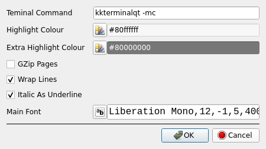

What it is and does
I write a number of my own programs, and have always had a bit of a problem writing the manpage.
This is the QT 5/6 version of my gtk 2/3 manpage editor.
Manual
File Menu
Spell Check
Tool Bar
Preferences
Properties
Text Formatting
ToDo
File Menu

New Manpage will create a new manpage.
New Section adds a section to the manpage.
Open opens a manpage file.
Open opens a system install manpage by name.
Open Template opens a template file installed in PREFIX/share/ManPageEditorQT/examples, you can change this template to suit your tastes or replace it with your own template, at some future stage I will add more templates and possibly add a template folder.

Preview Manpage will preview the manpage in ( at the moment ) xterm, the terminal to be used will be set in prefs.
Save/Save As/Quit and Close are standard.
Spell Check
Spell check a section from the 'Edit' menu.
Ignore will ignore the word for the rest of the sesion, Apply will change the word, Close just shuts the dialog doing nothing.
Toolbar
Pretty standard the entry box is a 'Live' search just start typing, press enter to go to the next match and shift+enter for the previous.
Preferences

Terminal Command is used to display the manpage preview.
Highlight Colour is used to hiighlight the current line, if you don't want the line highlighted set the alpha to 0.
Extra Highlight Colour is used by the spell checker.
GZip Pages will gzip a page automatically when saving, pages are automatically unzipped if needed when opening.
Wrap Lines is only used in the GUI and doesn't effect the saved manpage.
Most ( all? ) terminals will show italic text as underlined, this simulates this, again no effect on the saved manpage.
Properties

Set the properties for the entire manpage.

Right clicking on a tab will bring up the section properties dialog allowing you to change the name of the section and/or the section type.
Upper case tab names are main sections, lower case are sub sections, The tab case is for visual looks only the actual case of the section is what is typed in the 'Name' edit.
It's usual for a main section to be all uppercase.
Text Formatting
Simple text formatting is done via the 'Formatting' menu just select a piece of text and select bold/italic or clear, italic text tends to be shown in the terminal as underlined, this can be set in the prefs.
ToDo
More help.